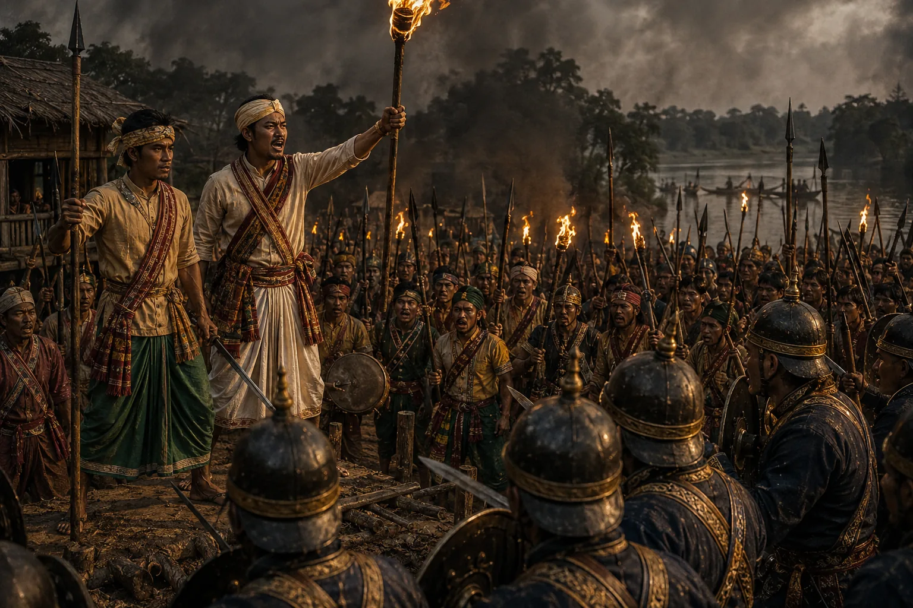

Outbreak of the First Moamoria Rebellion
1769 · The Moamoria risings

Enraged by insults to their Guru, peasant masses and Moran disciples of the Moamoria Satra revolt, routing royal forces and capturing the capital Rangpur.
Sources have not yet been catalogued for this record.
People: Lakshmi Singha (Sunyeophaa), Naharkhora Saikia, Ragha Neog (Raghab Borbarua)